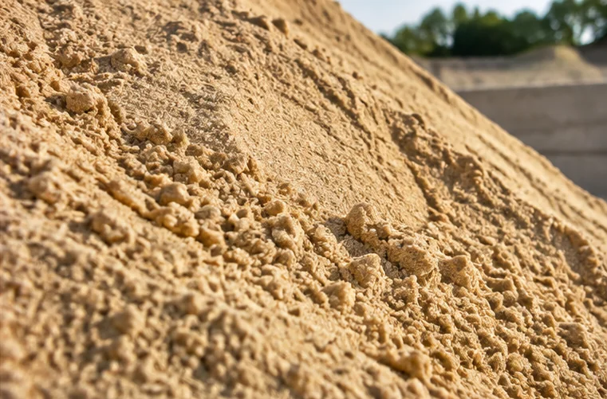
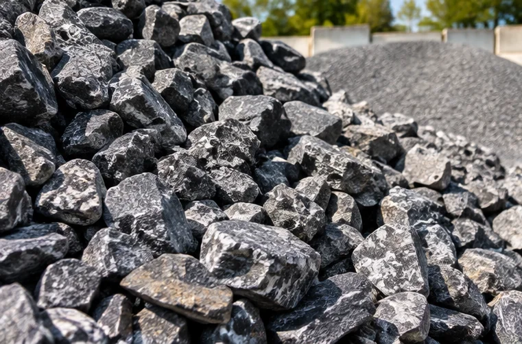
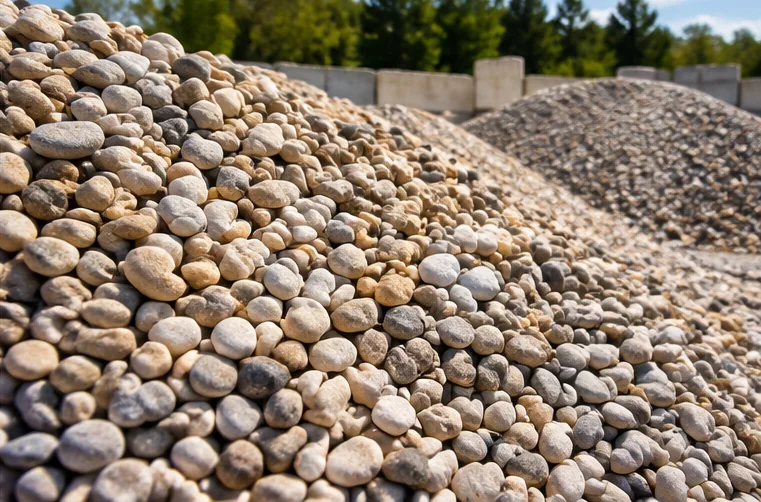

Piasek i materiały zasypowe
Oferujemy różne rodzaje piasku przeznaczonego do prac budowlanych, ziemnych i wykończeniowych.
Zobacz szczegóły →Dostarczamy wysokiej jakości kruszywa i materiały sypkie wykorzystywane w budownictwie, drogownictwie oraz pracach ziemnych. Oferujemy szeroki wybór materiałów, profesjonalną obsługę oraz sprawną realizację dostaw.
Stawiamy na jakość, terminowość i konkurencyjne ceny. Niezależnie od tego, czy realizujesz dużą inwestycję budowlaną, czy prace wokół domu - pomożemy Ci dobrać odpowiedni materiał do Twoich potrzeb.

Oferujemy różne rodzaje piasku przeznaczonego do prac budowlanych, ziemnych i wykończeniowych.
Zobacz szczegóły →
W naszej ofercie znajdziesz wysokiej jakości kruszywa łamane, które doskonale sprawdzają się przy budowie i utwardzaniu nawierzchni.
Zobacz szczegóły →
Oferujemy żwiry płukane oraz kruszywa dekoracyjne, które znajdują zastosowanie zarówno w budownictwie, jak i aranżacji przestrzeni wokół domu.
Zobacz szczegóły →piasek, żwir, tłuczeń i kamień.
atrakcyjne warunki współpracy.
transport na terenie całej Polski.
materiały dla budownictwa, drogownictwa, firm wykonawczych i klientów indywidualnych.
pomoc w wyborze odpowiedniego kruszywa.
Oferujemy różne rodzaje piasku przeznaczonego do prac budowlanych, ziemnych i wykończeniowych.
W naszej ofercie znajdziesz wysokiej jakości kruszywa łamane, które doskonale sprawdzają się przy budowie i utwardzaniu nawierzchni.
Oferujemy żwiry płukane oraz kruszywa dekoracyjne, które znajdują zastosowanie zarówno w budownictwie, jak i aranżacji przestrzeni wokół domu.
Zobacz również: Piasek zagęszczający (zasypowy) · Piasek płukany 0–2 mm · Piasek kopany (podsypkowy) · Tłuczeń granitowy, bazaltowy i dolomitowy · Żwir płukany 2–8, 8–16 i 16–32 mm · Grys dekoracyjny
Zapewniamy transport i dostawę zamówionych materiałów pod wskazany adres na terenie całego kraju.
Dbamy o sprawną organizację dostaw, terminowość oraz dopasowanie warunków transportu do rodzaju i ilości zamówionego kruszywa.